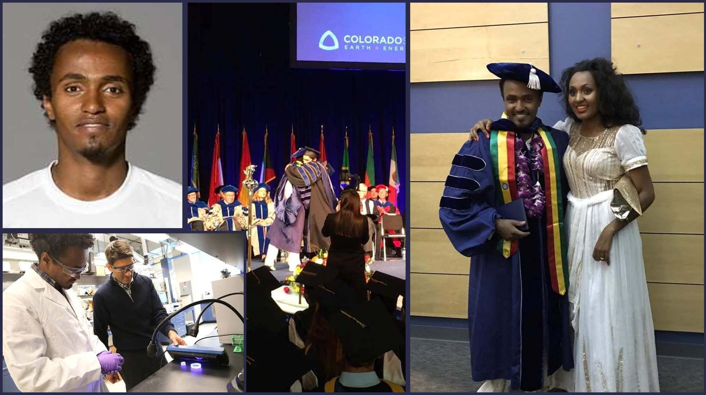
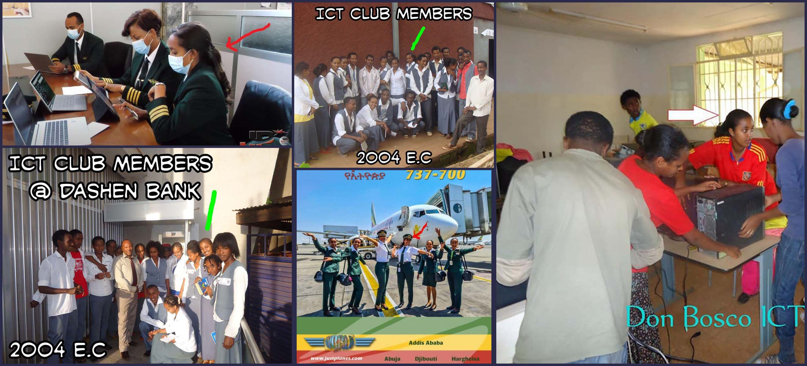
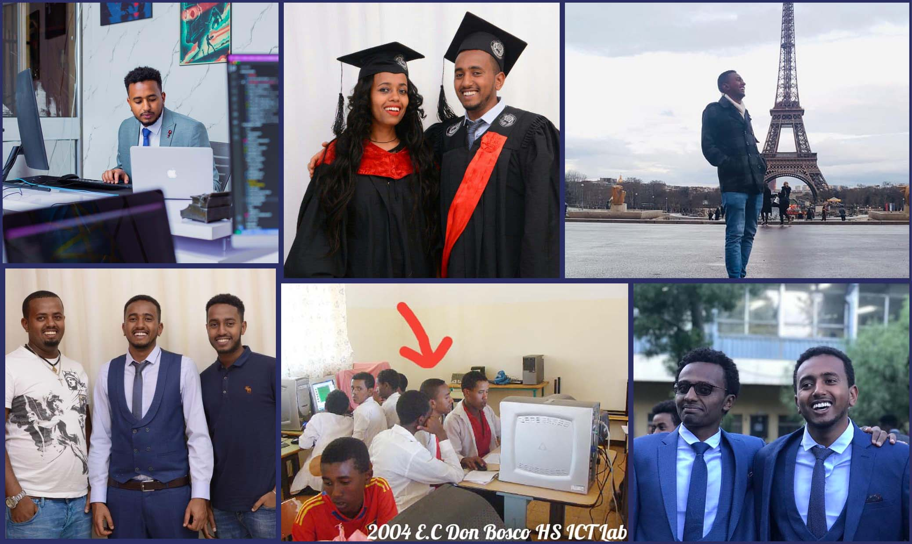
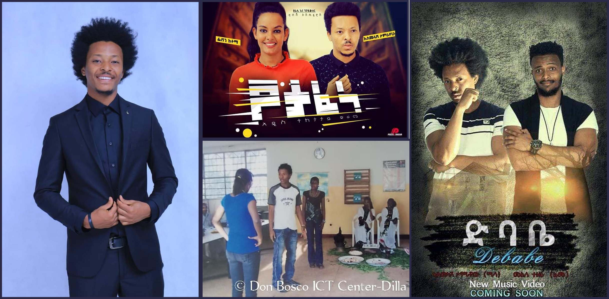
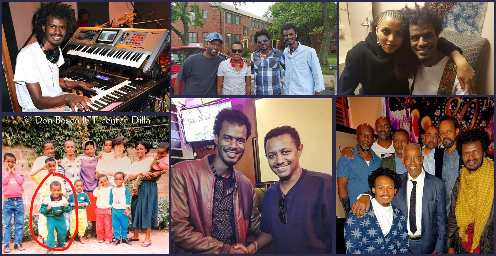
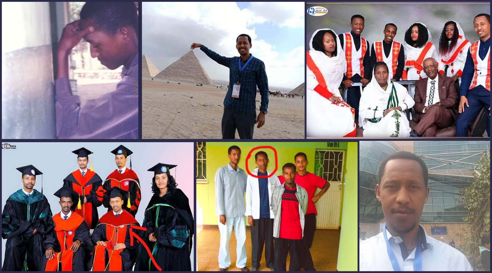
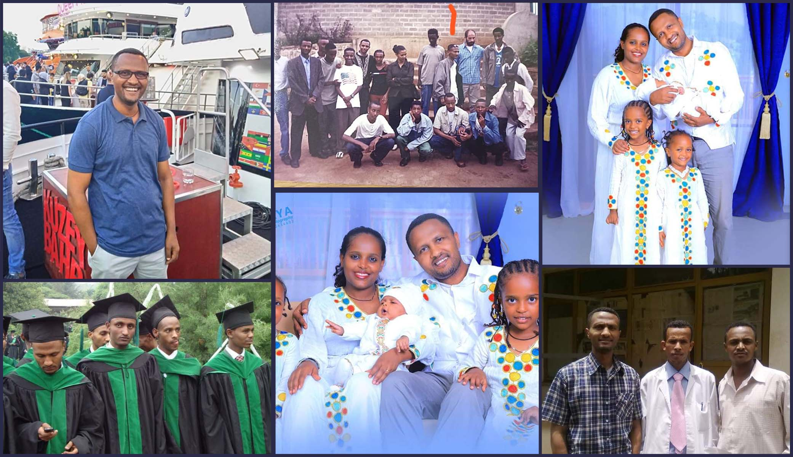
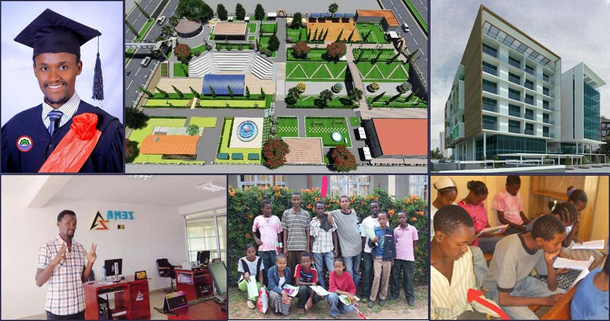
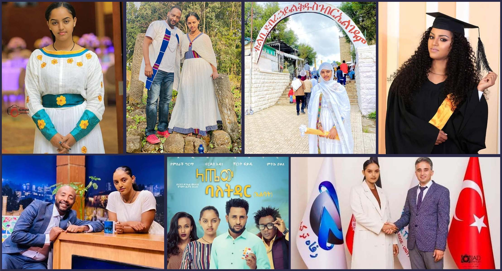
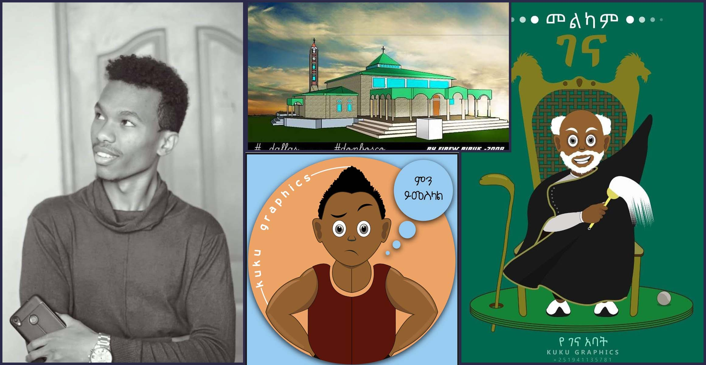

Henok Adem (PhD, Data Scientist) studied in our school in 9th and 10th grade in 1995 and 1996. He was very smart and loved by his teachers and students. After passing the 11th grade with good results, he was able to continue his education in America by getting an opportunity to study abroad.
He was educated in America from first degree to third degree. He was not even 30 years old when he received his third degree from the Colorado School of Mines
He has worked in Microsoft as a Data Scientist. He is currently working as a Data Scientist at FINRA

Captain Hani Fkadu was born and raised right here in Dilla. She attended Dilla Donbosco Schools from Kindergarten to Grade 12. Hani Fikadu studied at Don Bosco Secondary and Preparatory School from 2002 to 2005 from 9th to 12th grade. And joined university by achieves satisifactory result in grade 12 enterance exam and studied medicine in university.
She joined the airline by competing when the airline issued a pilot advertisement and completed her training properly and flew her first flight a year ago.
In celebration of International Women's Day on March 8, 2021, Ethiopian Airlines had an all-female Boeing 737 flight program, and she participated as a co-pilot on this flight.
When she was in our school, she was a member of the ICT Club and actively participated in various events. Our school congratulated her for this. She has reached this point because of her determination and tireless efforts.
We wish her all the best!

Yared attended Dilla Don Bosco Schools from Kindergarten through 12th grade. In 2006, he joined Addis Ababa University with satisfactory results in the university entrance exam and attended the software engineering course and graduated in 2011 with a 3.9 grade.
Yared was our students who went from Kindergarten through 12th grade finish first in his class. He was also highly liked by the school management and teachers for his manners.
His connection with computers started when he was a seventh grader.His father Ato Tadse were examplary father by giving close attention to him and his sisters and brothers education.
Ato Tadese has served in the parent representative committee of our schools for many years. During his stay, in addition to his main work as a representative of parents, he gave fatherly advice to our students at various times. The school sincerely thanks you for your contributions.
Jared served internships at large companies during his university years. More than his university education, his practical work in the companies gave him a great experience.
Currently, he is running a software company called Mereb Technology with more than 10 employees as a manager. The company works in cooperation with large corporations in America, Canada and Europe.
The services offered by the company are as follows:
Services:
Solutions:
I have been able to closely observe Jared's interest in computer technology since he was in the 7th grade. I taught him from 9th to 12th grade. At a time when most of the talented students of our school are entering the field of medical education, he was able to enter the field of software education by realizing his potential and interest.
GOD, his family, teachers and friends have contributed a lot for the level he has reached now and they should be thanked.
It is the constant effort and desire of teachers to see their students be successful. We hope you do better in the future and make us proud.

Artist Asmelash Tamrayhu studied in our school from 2002 to 2004 from 10th to 12th grade. During his stay, he was a member of the ICT club and a coordinator and leader of forum events organized by our school.
After the university entrance exam, following his talent and interest, he entered Addis Ababa University's Department of Theater and Art and completed his studies with satisfactory results.
After graduating from the university, he immediately joined the National Theater, which has an old and multi-professional ensemble.
He has participated in various plays at the theater. Such as:
▶️ "አልቃሽና ዘፋኝ"
▶️ "ሚስጥሩ"
▶️ "እምዬ ብረቷ"
▶️ "አድዋስ"
▶️ "የአሻ ልጅ"
▶️ "የኛ ሰፈር"
Songs:
▶️ "አደራ"
▶️ "ሰላም ናት"
▶️ "ድባቤ"
Film and TV Drama:
▶️ "የታፈነ"
▶️ "ሚዛን"
▶️ "ማበዴ ነው"
▶️ "መገናኛ"
▶️ "አዝማሪ ምን አለ"
▶️ "እርግቤ"
▶️ "ፍርስራሽ"
▶️ "የተጣሉት"
This multi-talented student of ours has put in a lot of effort to become what he desires and envisions. We hope he can do better things in the future. I believe our other students will learn from him.

Dawit Bosco grew and learn inside dilla don bosco school from Kindergarten to grade 12. After completing his preparatory education at Dilla Secondary and Preparatory School, following his passion and talent he joined and graduated from Addis Ababa University's Yared Music Department as a pianoist.
During his time at Dilla Don Bosco, Dawit first served as a vocalist at various school events and then as a keyboard player in the choir of the Catholic Church. He participated in the production of the church's first hymnal CD as a singer and composer. He also participated as a keyboard player in the Gedeo Zone modern music group. During his stay, he was professionally involved in the vocalist Aklilu's album called "Gedeo Jebate".
While he was a student at the Yared School of Music, he worked with various bands on the side. With "Ras band", he has performed the works of our country's young and veteran singers in the country and abroad.
He has been living and working in America and has established his own "Bosco Studio". He is doing various vocal works in the studio.
This young man is a multi-talented artist and he has done acting and soundtracks for the series drama aired on EBS TV called "ሰንሰለት". Composing music, writing poetry and reaching melody is his special talent.
Dawit is our student who has successfully achieved his childhood dream. We think our other students can learn a lot from his life.

His name is D/r Anteneh Tadese. His 8th grade ministry exam result was 99.9% which was first in South Region in 1995. He studied his 9th and 10th grade from 1996 to 1997 at Don Bosco Secondary School. He excelled our school by achieving #A's in all subjects in the 10th grade national examination.
He attended Dilla Secondary and Preparatory School and scored the second highest score of 444/500 in the 12th grade university entrance exam in 1999. After completing his 12th grade with excellent results, he studied medicine at Mekele University and obtained his bachelor's degree.
He then specialized in general surgery. He was working at Mekele University Referral Hospital but due to the security crisis in Tigray region, he is currently working at Dila University Referral Hospital temporarily.
D/r Anteneh Tadese was our student who was recognized by the school community for his morals and academic skills. For me he was a well-rounded student that I admired the most out of all the students I met in the school where I worked for more than 20 years.

This article of our successful students is about the talented, humble, kind and friendly D/r Yabibal Gebeyehu.
He completed his primary education at Wallame Don Bosco Primary School, completed his 9th and 10th grade in 1993 and 1994 respectively at Don Bosco secondary School, and completed his preparatory education at Dilla High school and Preparatory School in 1996. Upon completion, he headed to Gondar University to study medicine.
Dr. Yabbal was our most brilliant student who came out first in his class at Wallame Don Bosco primary school and Don Bosco secondary school. In 1994, he was able to get "A" in all subjects in the 10th grade national examination.
During his stay in our schools, he participates in various school activities alongside his studies; He was our student with a unique personality who shared his knowledge with his friends.
After graduating as a medical doctor from the famous University of Gondar, he has worked in a hospital for some time and is now working at Dila University Referral Hospital, specializing in pediatrics.
Together with his long-time school friend, D/r Jarso Tadesse, he opened Biruk Medical Clinic to provide services to the community of the city where he grew up and studied.
D/r Yabbal is married to Feven Wudneh, who was also a student of our schools from primary to preparatory stage, and they have 2 boys and 2 girls, a total of 4 children. His children are good in their studies just like him and their mother Feven./p>
He was able to reach the level he has reached by going through various challenges in his life. Dr. Yabbal supports our school on a voluntary basis for various issue whenever neccessary
I think our students have learned a great lesson that even if you are going through various challenges in life, if you are firm in your goals, you can reach the level you want.
We wish him and his family long life and good health.

Bereket Yohannes attended his primary education at Kofe Primary School and his secondary education at Don Bosco Secondary School from 2001-2004 from 9th to 12th grade.
He attended his university studies at Adama University from 2005 to 2009 and graduated in Architecture.
Since 2010, he has worked in the South Region Construction Office and yirgacheffe City. Currently, he has opened his own company Zema Consulting Architect on the first floor of the Dila Madhan Building and is doing various jobs.
Among the architectural and other design works he has done are Dilla City Park and various residential and commercial buildings
During his stay at our school, Bereket was involved in various volunteering and clubs in addition to his main education. For instance
▶️ Served as a tutorial teacher organized by the Past Pupils Association. He also served as animator in the association's income-generating carnival games.
▶️ This association participated in the first aid training organized by Dilla Health Center and he was part of the training and served our school with the training.
▶️ He used to present various articles together with his classmates in our school Zekre Donbosco magazine, which was prepared by D/r Lulseged and Brother Melese (Rest In Peace).
Our students are studying and working in different professional fields, and this is why we opened this social network to promote our students effectively, so I invite you all to participate.You can Suggest the story of our former student who you say is an examplary to others.
We wish our dear student a good career!

Actress Nardos Adane was born in Dila and attended primary school in Dila Don Bosco Holy Cross primary school. She then went to hawassa and completed her 12th grade with good results. After that she joined the medicine Department only to quit after one year.
She was selected as Miss Hawasa after winning the competition to represent the city of Hawasa on the Cities Day organized in Mekele. she then went to Mekele and introduced Hawasa well.
She quit her favorite #meds course due to personal problems and went to Addis Ababa to work and did various jobs.
Actress Nardos Adane has participated in more than 15 films and she has become more popular after showing her outstanding performance in the television drama series "Tirta". Currently, she is working in the drama series "Zuret" on DSTV "Abol Duka" channel.
Aside her acting carrier, She is doing her own personal work in #Marketing_Management where she graduated. She is also actively involved in various charity works.
She is an honorary ambassador and collaborator of "Ashewa Technology Solutions" and recently agreed to work with "Reifah", a Turkish Real Estate Company, as an Agent and Promoter.
She is interested in participating in various good works at her school, and in 2012, She was talking with the coordinators of Don Bosco past Pupils association Me and Mihret Meskele to work together on a project that brings together former Don Bosco students.
I hope you have learned from her life experience. If there is a successful student of our schools that you think should be presented next, you can give a suggestion or write the story and post it on your page.

Firew Brook studied at Dilla Don Bosco Secondary School from 2003 to 2006. His stay at our school was very good, especially in ICT education. He was among the top in the Adobe Photoshop Course given in grade 11.
He graduated from Addas Ababa University in the field of architecture and works on various graphic design projects with his own efforts and dedication.
KukuGraphics is the company where he does his creative work. Among the works he does:
Currently he is doing various graphic design work in a famous advertising company.